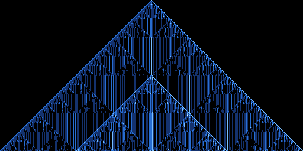
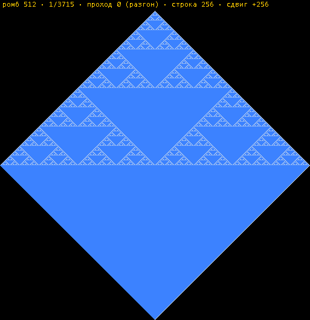
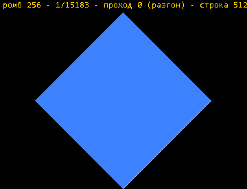
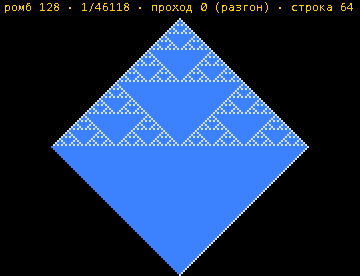
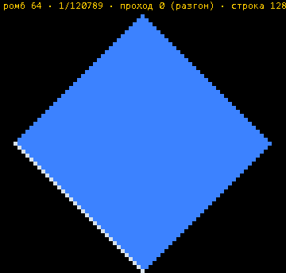
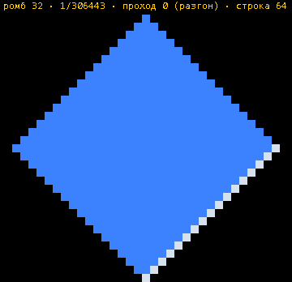
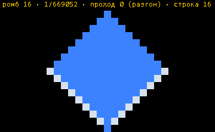
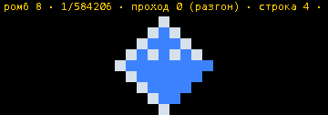
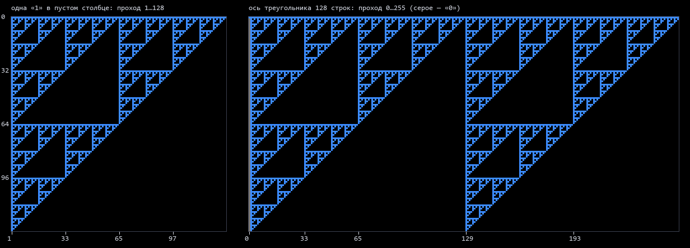

zerkalius · битмультфильмы
Что получилось у треугольника Аниматрицы — готовым к просмотру. Щелчок по картинке — в полный размер (и ×2, ×4). Разбор каждого пункта — в «Исследовании», сделать то же самому — в «Треугольнике». У каждого случая — ▶ в Треугольнике: откроет Треугольник с этой заготовкой и уже запущенной Аниматрицей (твоё состояние Треугольника при этом не трогается).

- Правило одно: волна сверху вниз, клетка смотрит только на соседа над собой. Одинаковые гасят друг друга, символ протекает в пустоту, из двух разных остаётся верхний.
- Период — степень двойки: ближайшая ≥ числа строк. 1024 строки — цикл ровно 1024 прохода.
- Разгон: цикл начинается с прохода 2m+1, где 2m ≤ 2(N−2)/3 — ровно тогда, когда гибнет последний «0». Проверено для всех N до 1024.
- Кадр — XOR копий: через k проходов кадр — сумма копий, сдвинутых вниз на d, где
d & (k−1) = 0. - Ромбы: картинка режется на ромбы; их (q−1)(2q−1) при q = N / высоту ромба, и при одном q картина одна и та же на любом N.
- Родник: верхняя «1» каждого столбца вечна; одна «1» через k проходов стоит на глубине d ⇔
d & (k−1) = 0— отсюда слои толщиной 2m.
Уникальные ромбы цикла — 1024 строки, семь размеров
Только уникальные: повторы отброшены — это словарь рисунков (сжатие), а не ход волны, волна здесь порвана. Подряд, с повторами и номером рисунка у каждого кадра — кнопка «🎞 Все ромбы цикла подряд» в Треугольнике (v0.029). Кадры цикла, разрезанные на ромбы, и все РАЗНЫЕ рисунки ромбов в порядке появления — первые 300 каждого размера (первые — ещё разгон, с нулями). Крупные ромбы не повторяются никогда, мелкие — повторяются чаще. Число рядом — сколько разных рисунков набирается за весь цикл.

Ромб 512 · 3 в кадре
Вершина и два боковых. За цикл 3 072 разных = ровно 3·P: каждый кадр даёт три новых, боковые всегда зеркальны друг другу.

Ромб 256 · 21 в кадре
За цикл 12 517 разных ≈ 12·P — столько же на 64, 128, 256 и 512 строках (подобие по q = 4).

Ромб 128 · 105 в кадре
За цикл 37 385 разных, в кадре 43–59.

Ромб 64 · 465 в кадре
За цикл 101 628 разных, в кадре 130–223.

Ромб 32 · 1 953 в кадре
За цикл 265 104 разных. Чем больше нулевых разрядов у k−1 (копий), тем пестрее кадр: 475 → 572 → 648 рисунков.

Ромб 16 · 8 001 в кадре
За цикл 582 778 разных — рекорд по разнообразию.

Ромб 8 · 32 385 в кадре
За цикл 436 864 — меньше, чем у 16: у мелкого ромба просто меньше клеток, и рисунки начинают повторяться.
Цикл и его законы

Цикл 128 строк
Все 128 проходов по кругу: контур не меняется, внутри дышит вложенный треугольник.


Разгон: кто живёт дольше всех
Цвет — сколько проходов держится «0». Рекордсмен — строка 3·2k−1+1, отступ ±2k−1: он и назначает начало цикла.

Протекание: родник
Одна «1» по проходам (слева) и настоящая ось треугольника (справа) — клетка в клетку, Серпинский по глубине и времени.
Ромбы изнутри


Каждый ромб — один бит
Слева кадр, справа он же из ромбов-битов: картина сворачивается сама в себя.

Надпись: ромбы как буквы
Каждый рисунок — своя буква; вдоль сторон читаются «слова» с периодом-степенью двойки.

Все ромбы кадра наложены
Жёлтое — единица во всех, тёмное — пусто во всех, фиолетовое — разнится.
Зеркало


Другие треугольники
Тот же закон держится не только у Серпинского: другие правила дают другой разгон, но цикл — снова степень двойки.


Без обрезки фона
Треугольник на сплошном «0»: у каждого столбца своя метка, синие нули живут и в цикле.
Полные «все ромбы цикла» (по 1500 рисунков на размер, 3–21 МБ), таблица по всем N и скрипты
расчёта лежат в локальном архиве проекта, archive\_issledovanie-treugolnik-1024\. Октаэдры по циклу, 3D пирамид
и фильмы мест собираются кнопками прямо в «Треугольнике».